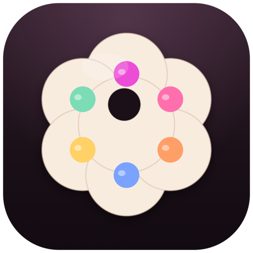

Palette

A keyboard-first launcher for macOS, built as a native app with a deliberately extensible provider system. Press a hotkey, type, act. No window chrome, no Dock icon, no script layer holding the core together.
⌥Space → /edit dotfiles → ⏎ opens the folder in your editor
Status
v2.5.1. Built for macOS 14+ (developed on macOS 27), Apple silicon. Not sandboxed and not distributed through the App Store, by design: a launcher needs to see your files and drive other apps.
Requirements
| Tool | Why | Install |
|---|---|---|
fd |
filesystem enumeration for /edit and /editf |
brew install fd |
fzf |
ranking for path results | brew install fzf |
zellij |
/zj sessions |
brew install zellij |
kitty |
terminal used by /zj |
brew install --cask kitty |
bw |
Bitwarden provider | brew install bitwarden-cli |
Only fd and fzf are needed for the core file workflows. Missing tools are
surfaced as an install row inside the launcher; nothing is installed silently.
Build and install
make # build a release app bundle at build/Palette.app
make install # copy it to ~/Applications
make run # build and launch the bundle in build/
make test # run the test suite
The app is ad-hoc signed. macOS may ask for Accessibility permission again after a rebuild; that is expected without a Developer ID certificate.
Homebrew
Palette ships through a public tap. Homebrew treats third-party taps as untrusted, so the first install may ask you to approve it:
brew trust --tap Myleshen/tap
brew install --cask Myleshen/tap/palette
The cask downloads the latest GitHub release, installs Palette.app into
/Applications, and clears the quarantine flag because the app is ad-hoc signed
rather than notarized. No Apple Developer subscription or App Store listing is
involved. Manual zip downloads may need System Settings > Privacy & Security >
Open Anyway.
To publish a new version: bump CFBundleShortVersionString and
CFBundleVersion in Resources/Info.plist, add a CHANGELOG.html entry, merge
the PR, then push a v<version> tag. Tagging is the release: CI runs the tests,
builds the zip, publishes it with the CHANGELOG entry as the notes, and updates
the cask in Myleshen/homebrew-tap. See CONTRIBUTING.html and
packaging/homebrew/README.html.
Uninstall
A plain uninstall removes the app and its login item. Palette's data lives outside the bundle, exactly like most Mac apps, so ask Homebrew to zap it as well when you want a clean slate:
brew uninstall --cask --zap palette
That removes ~/.config/palette (settings, providers, themes),
~/.local/state/palette (clipboard history, database, logs),
~/Library/Caches/Palette (Bitwarden session, favicons, web-app icons),
the preferences plist, saved window state and the Hammerspoon export.
macOS keeps the privacy grants separately from the app, so finish the reset
with the two commands below. tccutil is the only way to clear them;
Homebrew casks cannot run commands on uninstall.
tccutil reset Accessibility dev.myleshen.palette
tccutil reset ScreenCapture dev.myleshen.palette
If the first command reports No such bundle identifier, the grants are
already gone. Deleting the app by dragging it to the Trash removes neither the
data nor the grants.
First run
- Launch Palette. It lives in the menu bar.
- Press
⌥Space. - Run a command that pastes (for example a clipboard entry and
⌘⏎) and grant Accessibility when prompted. Copy-only actions work without it.
Configuration lives in ~/.config/palette:
~/.config/palette/
config.toml
providers/
neof/provider.toml # user copy of the file provider, seeded for you
themes/ # optional user themes
The bundled /edit provider lives inside the app. On first run Palette writes a
commented config.toml and seeds providers/neof so both examples are ready to
use without copying anything.
State (history, clipboard, frecency) lives in ~/.local/state/palette.
Caches live in ~/Library/Caches/Palette.
Using it
| Key | Action |
|---|---|
⌥Space |
show / hide |
⌥V |
clipboard browser with live preview |
⌘⌥T |
embedded terminal |
⌘⌥S |
scratchpad |
⌘⌥A |
Ask |
↑ ↓ |
move selection |
⏎ |
primary action |
⌘⏎ |
secondary action (usually paste, or reveal for paths) |
⌘K |
action list for the selection |
⌘1…⌘9 |
open the nth result |
Tab / ⇧Tab |
cycle provider tabs (/web, /zj, /bw, …) |
Esc |
clear the query, then dismiss |
⌘, |
open Settings |
⌘R |
reload config, themes, and providers after manual file edits |
Application rows expose Open, Show in Finder, Copy Bundle ID, and Copy Path in
⌘K; files and folders expose their own open/reveal/copy actions.
Provider tabs
A tab strip under the search field shows Apps plus every provider that declares
a trigger. It starts on Apps; clicking a tab opens that provider with an
empty query. Tab and ⇧Tab cycle through them without reaching for the
mouse, so /web, /zj, /bw, /clip, and the rest are one key away.
Prefixes
A prefix routes the query to one provider. The shared prefix character is
configurable (provider_prefix, default /), and each provider declares a bare
trigger word:
| Prefix | Provider |
|---|---|
/edit <query> |
files and folders, opened in the configured editor |
/editf <query> |
folders only, opened in the configured editor |
/zj <query> |
zellij sessions; ⏎ attaches or creates in kitty |
/bw <query> |
Bitwarden passwords |
/bwu <query> |
Bitwarden usernames |
/bwt <query> |
Bitwarden TOTP codes |
/bwn <query> |
Bitwarden notes |
/bwo <query> |
Bitwarden URLs |
/clip <query> |
clipboard history, text/images/files |
/port <query> |
listening TCP ports, with process and PID |
/cmd <query> |
commands from ~/.config/palette/commands.toml |
/proj <query> |
devx projects and worktrees, or ~/dev fallback |
/git <query> |
repositories with managed Git actions and panel output |
/term |
embedded terminal shell |
/scratch |
scratch notes and the editor |
/awake |
keep the Mac awake; timed or clamshell mode |
/recent |
recently used projects and files |
/snip <query> |
snippets with placeholder expansion |
/ask <question> |
one-shot OpenCode Go answer |
/askh <query> |
search retained Ask questions and answers |
/web <query> |
saved web apps; type a domain to add one |
/emoji <query> |
emoji picker |
/sys <query> |
settings, lock, sleep, trash, reload, quit |
/theme <query> |
switch themes live |
/calc <expr> |
calculator (also works unprefixed) |
/timer <duration> |
countdown timer: 25m, 1h30m, 1:30, or stop |
/shot |
screenshot the screen, a region, or a window |
/shots |
browse screenshots and recordings from the capture directory |
/rec |
start or stop a screen recording |
/color |
pick a colour and copy its hex |
/win <query> |
switch to any open window |
/unit <amount> <unit> in <unit> |
unit and currency conversion |
/stats |
disk, memory, load, battery, uptime |
/ssh <query> |
hosts from ~/.ssh/config |
/docker <query> |
containers: start, stop, restart, logs |
/gh <query> |
pull requests and issues through the gh CLI |
A trailing slash browses a directory breadth-first: /edit ~/dev/ shows the
direct children of ~/dev first, then the next level.
Unprefixed queries search apps, web apps, zellij sessions, pinned items, web
search engines, and any provider marked global = true. = 2+2 and bare
arithmetic also work.
Search matching
Matching is fzf-style, not exact-substring. Type the letters you remember and
Palette scores runs, word boundaries, and gaps: actmon finds Activity
Monitor, vsc finds Visual Studio Code, qbf finds The quick brown
fox, tst finds a Bitwarden login named Test, and drgn finds Dragon.
This applies to apps, clipboard text and file names, web apps, providers,
themes, and Bitwarden vault fields. Clipboard search scans the whole configured
history instead of only doing a SQL prefix match, so non-contiguous searches
work there too. /edit still delegates path ranking to the real fzf binary
with --scheme=path.
The empty-query screen is deliberately the app list: apps in alphabetical order (or most-used), with pinned apps and pinned web apps at the top. Unpinned web apps, running sessions, and search suggestions stay out of that screen until you type or pick their tab.
Web search
Type any query that is not a file or app and Palette offers one row per
configured engine (Google, DuckDuckGo, GitHub, YouTube by default). ⏎ opens
the result in your default browser. Engines are ordinary config rows in
[web_search]; add or remove them in Settings or config.toml.
Ask
/ask sends one quick question to an OpenAI-compatible endpoint and stores the
answer. It is deliberately one-shot: there is no conversation thread, so every
question is independent.
Supported endpoint:
- OpenCode Go (
https://opencode.ai/inference/go/openai/v1) — every OpenAI-compatible Go chat model, ordered cheapest output price first. A Go key is required.
Type /ask with no question to choose a model. Free Go models are listed first
and marked FREE; paid models show their input/output price per million tokens
and are ordered cheapest first. /ask what is 2+2 asks the selected model
directly. Answers can be copied, asked again, or found later in history.
The Ask History sub-tab (or /askh) searches retained questions and answers.
Each row shows the model, endpoint, age, latency, and token usage. Ask history is
kept up to the count and age configured in Settings and can be deleted per row.
API keys are stored in an encrypted user-only file under Palette's config
directory, not in config.toml. A key is visible in the Settings
field only before you save it; afterward Palette shows “Key saved in the macOS
local key file” and never displays the value again. Keys are never written to
config.toml, logs, or history. OPENCODE_API_KEY, OPENCODE_GO_API_KEY, and
OPENAI_API_KEY are also accepted as environment fallbacks.
Settings
⌘, (or the menu-bar icon) opens a native Settings window. General holds
shortcuts, the terminal/editor used by providers, launcher position, app order,
and Keep Awake toggles for keeping the Mac awake and arming clamshell mode. Appearance holds themes and typography. Clipboard, Search, and
Ask cover their own features. Providers controls which tabs are visible,
their order, and optional aliases. Advanced has config/theme/log links,
backup, diagnostics, and version information. The Ask tab selects the endpoint and model,
saves a local API key, toggles automatic fallback, and controls how many Q&A
entries and how many days of history are kept.
Hotkeys are recorded by pressing them, not typed. The recorder uses a short-lived
session event tap, so macOS-reserved combinations such as ⌘Space are captured
instead of being swallowed by the system; it stops as soon as Settings loses
focus. Accessibility permission is needed for reserved-key capture. Saving
validates every shortcut, rejects duplicates, and refuses a browser that is not
installed. The search field at the top of Settings jumps directly to a matching
section. Changes apply immediately. Editing files by hand still works, then
press ⌘R.
Search position
search_position = "top" | "center" controls where the panel opens. center
keeps the top-first layout but opens the panel in the middle of the screen.
The older bottom value is accepted for compatibility and now maps to
center.
The launcher is always the two-surface pill: a floating search capsule above a rounded content card. There is no alternate classic layout.
Pinned items
⌘K on any result includes Pin to Palette; every pinned row also offers
Unpin from Palette. Pinned apps and pinned web apps rise to the top of the
default app screen and global search. Pins are stored in Palette’s SQLite state.
Clipboard
⌥V opens a wide clipboard browser with a live preview pane; /clip opens the
same history in the normal window. Copied text, images, and Finder file
selections are stored separately and listed under Text, Images, and
Files headings. Add a category word to filter: /clip text,
/clip images, /clip files, optionally followed by a search.
⏎on any clipboard row pastes immediately into the app you came from, after which the clipboard browser closes. With Accessibility granted this is a real ⌘V; otherwise Palette copies the entry and opens the permission prompt.- Text rows preview in full; long entries can be copied in full or pasted.
- Images store a thumbnail and dimensions, with Copy/Paste Image.
- Files keep their paths, icon, size, and a
batrender for text files, with Copy/Paste Files and Reveal in Finder.
Pinned entries sort to the very top, across every category, and the filter tabs
above the list switch between All, Text, Images, and Files.
⌘K toggles Pin and Delete for every kind. Retention defaults to 5,000
entries and is configurable in Settings; images are stored as PNG and files as
paths in Palette’s SQLite state. Anything marked concealed by another app is
never recorded.
Values copied from Bitwarden are always written as concealed and clear after 30 seconds, so they never enter Palette’s clipboard history.
The vault listing and the CLI session key are sealed with AES-GCM under
~/Library/Caches/Palette/Bitwarden for thirty days, scoped to the active CLI
profile. Restarting Palette inside that window does not ask for the master
password again; Refresh Bitwarden Cache forces a fresh read without logging
you out. The master password itself is never stored.
Screenshots and recordings
/shot captures the screen, a region, or a window; /rec starts and stops a
recording. Both use the system capture engine and land in the configured
capture directory. ⌘⇧3, ⌘⇧4 and ⌘⇧6 capture the screen, a region and a
window from anywhere (they replace the macOS keys), ⌘⇧5 records, and a
menu-bar Stop recording · m:ss item shows while a recording runs. All four
live in Settings → Shortcuts and can be cleared or rebound.
A capture plays a shutter sound and shows a thumbnail for a couple of seconds
(both toggles in Settings → Capture), so it is obvious that it worked. /shots
lists everything in the capture directory, newest first and grouped by day —
screenshots and recordings together — with a thumbnail (a poster frame for
videos) in the preview pane, plus open, annotate, copy image and reveal. Thumbnails
are generated once per file and cached by path and modification date.
Recordings can target the whole screen, a single display, or a fixed region, and
optionally include the default audio input — set under Settings → Capture or per
row in /rec, which lists every active display by name and resolution.
[capture] gallery = "all" | "palette" decides whether /shots lists everything in
the folder or only Palette's own shot-* and rec-* files.
Annotate rows in /shot open the editor on the capture: arrow, rectangle,
text and crop, six colours, a width slider, ⌘Z undo, ⌘C copy, ⌘S save over
the original file and ⌘⇧S save as a copy. Marks are stored as fractions of the
image, so they look the same at any window size, and cropping remaps them instead
of dropping them.
Click a mark to select it (dashed outline), drag it to move it, press
delete to remove it. Text is typed in place: pick the text tool, click, type,
press return. ⌘+, ⌘- and ⌘0 zoom the canvas, and the scroll wheel pans
while zoomed, so a 3440 px screenshot can be edited at 1:1.
Recordings open in a player window when they stop: play, scrub, reveal in
Finder, or copy the path. Both behaviours are toggles in Settings → Capture
(edit_after_capture, preview_recording), and the first capture asks for
Screen Recording permission once per build.
Bitwarden
/bw, /bwu, /bwt, /bwn, and /bwo share one in-memory session. The first
read of a vault is cached for thirty days in an AES-GCM encrypted file under
~/Library/Caches/Palette/Bitwarden; the key is a per-user 0600 file. Prefix
switches, typing, and copy actions reuse the snapshot instead of spawning
bw list again. Choose Refresh Bitwarden Cache in the menu-bar menu when the
vault changed elsewhere; the next search reads it fresh. The cache is scoped to
BITWARDENCLI_APPDATA_DIR, so test and real profiles never mix.
Web apps
/web keeps your own web-app shortcuts, independent of any browser-specific
“install as app” feature. An Add Web App… row is always present; choose it
(and paste a URL), or type a domain directly:
/web figma.com- choose Add Web App “Figma”
- give it a name, then optionally a shortcut such as
ctrl+alt+f
Local development URLs work too: /web http://localhost:5173 or
/web http://127.0.0.1:8080.
Web apps open in Helium by default, in their own Chromium app window
(--app=…) with a dedicated Palette profile, not as a normal browser tab.
Change the browser in Settings → Search; only Chromium-based browsers are
listed and Palette will not save one that is not installed. Hammerspoon
shortcuts use the same app-window launcher, so the shortcut opens the same
standalone window instead of Safari.
A shortcut needs at least two modifiers. Palette writes
~/.hammerspoon/palette-webapps.lua; Hammerspoon watches that file and binds
each app to its URL, so shortcuts are managed here, not by editing Hammerspoon
config. Use ⌘K on a saved app to open it, copy its URL, set/change or clear
its shortcut, or remove it. Opens are counted by the normal frecency store, so
frequently used apps rise to the top. Definitions live in Palette’s SQLite
state, not in config.toml.
Clipboard transforms
⌘K on any text entry includes Transform Text…. Pick a transform and the
result opens with a full preview; ⏎ copies it and ⌘⏎ pastes it. Built-ins:
trim, JSON pretty/minify, YAML format, TOML format, Base64 encode/decode, URL
encode/decode, shell quote, path quote, uppercase/lowercase, sort/dedupe lines,
strip ANSI, Markdown link, and slug. Transforms are local and deterministic; no user script runs from a
clipboard copy.
Scratchpad and terminal
/scratch lists saved notes and opens a persistent editor with a title field.
It accepts pasted text, supports normal selection and editing, and provides
Paste, Copy All, Clear, and Save & Close. Clipboard text entries
also have Open in Scratchpad in ⌘K; the most recent note is restored by
the ⌘⌥S shortcut.
/term opens a persistent multiplexer session in the content panel using
SwiftTerm. By default it attaches Zellij's Palette session, then falls back
to tmux, then a plain shell. Closing the panel detaches the client; the session
and any long-running command keep running, and the next /term reattaches.
⌘W closes the panel. /cmd items also expose Run in Panel, which runs the
command in that same shell.
[terminal_session] controls this:
[terminal_session]
multiplexer = "auto" # auto | zellij | tmux | none
name = "Palette"
shell = "" # empty = fish if installed, else zsh
font = "" # empty = kitty font, then theme mono
font_size = 0 # 0 = kitty size, then 13
The embedded terminal auto-detects Kitty's font_family and font_size.
Set a Nerd Font here (or install the one Kitty uses) so Zellij/fish icons render
correctly.
Palette sets SHELL to the chosen shell when it starts the multiplexer, so new
Zellij or tmux panes use fish too. An existing Zellij/tmux server keeps its old
environment; restart that session once after changing the shell.
Developer commands
/cmd reads ~/.config/palette/commands.toml. Each [[command]] declares a
title, keywords, executable, arguments, optional working directory, terminal or
GUI mode, and whether to ask for confirmation. Nothing is an inline shell string
in config.toml.
[[command]]
title = "Go Test"
keywords = ["go", "test"]
executable = "go"
args = ["test", "./..."]
cwd = "~/dev/project"
terminal = true
confirm = false
Scratch notes, recent items, and snippets
/scratch lists named scratch notes plus New Scratch Note. Each note has a
title and body; edits are saved when you close the editor. Use ⌘⌥S to open the
most recent note directly. /recent lists projects and files you have opened
through Palette, newest first.
/snip reads ~/.config/palette/snippets.toml:
[[snippet]]
title = "Email signature"
keywords = ["mail"]
text = "Best,\nMyles\n{{date}}"
Snippets are never executed. ⌘K copies the expanded text, copies the raw
template, or opens the expansion in the scratchpad. Supported placeholders:
{{date}}, {{time}}, {{datetime}}, {{clipboard}}, {{uuid}},
{{home}}, and {{user}}.
Keep awake
/awake (or the Keep Awake provider tab) keeps the Mac awake for 15
minutes, 30 minutes, 1, 2, 4, or 8 hours, or until you stop it. It also has a
Clamshell Mode (Lid Closed) toggle and a menu-bar Keep Awake submenu.
Normal keep-awake uses native power assertions, so it needs no password. The assertions are recreated after wake and display changes, and a timer restores normal sleep automatically. Clamshell mode is different: macOS treats a lid close as forced sleep, so Palette arms a tiny root guard through the standard administrator prompt. The guard disables lid sleep only while Palette is running, clamshell mode is on, and the Mac is on AC power. Unplugging power, turning clamshell off, or quitting Palette restores normal lid sleep within a few seconds. Never leave an awake, closed MacBook in a bag.
Projects, ports, and Git
/projlists devx projects and worktrees when devx is installed, with Open in Neovide, Open Terminal, Open Workspace, New/Remove Worktree, and Apply Config. Without devx it falls back to Git repositories directly under~/dev./portlists listening TCP ports with process, PID, user, and working directory. Openlocalhost:PORT, copy the port/PID, or terminate with SIGTERM and explicitly force-kill with SIGKILL; both kills require confirmation./gitlists repositories and exposes status, branch, stage all, commit with a message, fast-forward-only pull, push, recent log, and LazyGit. Status, log, and mutations run as managed subprocesses and return their output to the panel; only Open LazyGit launches a terminal. Complex Git work still belongs in LazyGit; Palette never force-pushes or rewrites history.
App and file actions
Application rows offer Open, Show in Finder, Copy Bundle ID, Copy
Path, Quit App, and, for apps under /Applications, Move App to the
Trash… with a confirmation. Project, path, recent, command, port, Git, and
Finder-file rows include Open in Embedded Terminal at the row's directory.
Clipboard file previews use QuickLook, so PDFs, images, archives, and other
formats render directly in the preview pane.
Typography
[typography] overrides the active theme. Empty strings and zero sizes inherit
from the theme, which in turn falls back to the system font. Settings →
Appearance has family pickers, a free-text family field, size controls, a live
preview, and Reset to Theme. Missing fonts fall back silently with a startup
diagnostic.
[typography]
ui_family = "Avenir Next"
mono_family = "Menlo"
ui_size = 15
mono_size = 13
Provider aliases, order, and visibility
[providers] stores tab order, extra trigger words, and providers you want to
hide. Turn providers on or off in Settings → Advanced; the tab bar and Tab
cycling only include enabled providers. Order with the up/down buttons; aliases
are comma-separated. The canonical trigger never changes. Duplicate aliases or
triggers are rejected when saving.
[providers]
order = ["apps", "clip", "port", "git", "proj"]
disabled = []
[providers.aliases]
apps = ["launch", "a"]
clip = ["cb"]
Themes
/theme switches live. Built-ins include Default Dark/Light, Catppuccin
Mocha/Latte, Gruvbox Dark/Light, and Aetheria Pink (the pink/violet Noctalia
palette). Settings can choose the dark/light pair and auto/dark/light mode; theme
TOML files live in ~/.config/palette/themes.
Configuration
Minimal config.toml:
hotkey = "opt+space"
provider_prefix = "/"
terminal = "kitty"
terminal_app = "kitty"
editor_open_with = "neovide"
clipboard_hotkey = "opt+v"
terminal_hotkey = "cmd+option+t" # empty disables
scratchpad_hotkey = "cmd+option+s" # empty disables
ask_hotkey = "cmd+option+a" # empty disables
screenshot_hotkey = "cmd+option+shift+s"
recording_hotkey = "cmd+option+shift+r"
search_position = "top" # top | center
web_app_browser = "Helium"
app_sort = "alphabetical" # alphabetical | frequent
[window]
auto_size = true # size to the screen under the cursor
scale = 1.0 # 0.8-1.6; multiplies every size below, like rem
width = 0 # points; 0 = 680 * scale
max_height = 0 # points; 0 = 720 * scale
visible_rows = 0 # 5-10; 0 = 7 * scale, sets the panel height
clipboard_width = 0 # 0 = follow the panel width
ask_width = 0
preview_width = 0
terminal_width = 0 # 0 = 1000 * scale
scratchpad_width = 0
preview_layout = "below" # below | beside
[timer]
presets = [5, 10, 15, 25, 30, 45, 60] # minutes, shown in /timer
sound = true # chime when a timer finishes
notify = true # system notification when a timer finishes
[typography]
ui_family = "" # empty inherits the theme
mono_family = ""
ui_size = 0
mono_size = 0
[providers]
order = ["apps", "clip", "port", "git", "proj"]
disabled = []
[providers.aliases]
apps = ["launch"]
[terminal_session]
multiplexer = "auto"
name = "Palette"
shell = ""
font = ""
font_size = 0
[web_search]
enabled = true
[[web_search.engines]]
name = "Google"
url = "https://www.google.com/search?q={query}"
[theme]
mode = "auto" # dark | light | auto
dark = "catppuccin-mocha"
light = "catppuccin-latte"
[scopes.projects]
roots = ["~/dev", "~/dot-files"]
exclude = ["**/node_modules/**", "**/.git/**", "**/.build/**", "**/target/**"]
include_hidden = false
max_depth = 12
[clipboard]
enabled = true
max_entries = 5000
poll_ms = 500
clear_after_ms = 30000
See ARCHITECTURE.html for the full model, THEMING.html for themes, and PROVIDERS.html for writing your own provider.
terminal is the binary /zj launches; terminal_app is the GUI terminal used
for Bitwarden login/install prompts. Both default to kitty; Terminal is also
supported.
Extending
Two kinds of provider:
- Paths providers are declarative manifests backed by the built-in fd + fzf
engine.
/editfis the reference copy: duplicate it, changekindandopen_with. - Command providers are any executable that speaks newline-delimited JSON
over stdin/stdout. Write one in shell, Python, Swift, or anything else. A
complete Python example ships in
Resources/Examples/hello.
# ~/.config/palette/providers/hello/provider.toml
id = "hello"
name = "Hello"
trigger = "hello"
command = ["./hello.sh"]
timeout_ms = 1000
A user provider with the same id as a bundled one overrides it. Provider
manifests are discovered from ~/.config/palette/providers; Palette reloads
them automatically when a manifest changes, and ⌘R forces a full reload.
Development
swift build
swift test
make run
Layout:
Sources/PaletteCore models, config, theme, query, ranking, storage contracts
Sources/PalettePlatform macOS services: hotkey, panel, clipboard, fd/fzf, launch
Sources/PaletteProviders bundled providers
Sources/PaletteRuntime provider manifests and the external-process runtime
Sources/PaletteApp SwiftUI/AppKit shell
Tests/ unit and conformance tests
Troubleshooting
Nothing happens on the hotkey. Another app may own it. Change hotkey in
config.toml, or quit the conflicting app.
fd/fzf not found. GUI apps do not inherit your shell PATH. Palette
probes /opt/homebrew/bin, /usr/local/bin, and ~/.local/bin; if your tools
live elsewhere, set tools_path in config.toml.
Paste does nothing. Grant Accessibility in System Settings → Privacy & Security → Accessibility, then relaunch.
File results are stale. Palette re-walks on demand and caches briefly. Use
⌘R to force a refresh.
A provider misbehaves. Check ~/.local/state/palette/logs/palette.log and
the provider's stderr in the same log.